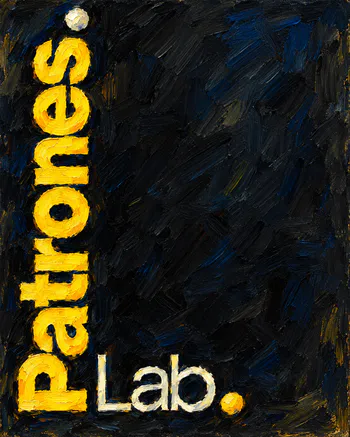

Champions League 2026/27 · Dự đoán điểm
Dự đoán số điểm khi kết thúc giai đoạn giải đấu với Poisson và Monte Carlo, hiển thị trung vị và khoảng phân vị 25–75 và 5–95.
Xem bài đăng ↗Dự đoán số điểm khi kết thúc giai đoạn giải đấu với Poisson và Monte Carlo, hiển thị trung vị và khoảng phân vị 25–75 và 5–95.
Xem bài đăng ↗
Diễn biến thứ hạng cuối cùng được dự báo đến hết vòng 3 qua một triệu lượt mô phỏng bằng mô hình Poisson và phương pháp Monte Carlo.
Xem bài đăng ↗
Sơ đồ nhiệt về các vị trí cuối cùng dự kiến cho các đội LaLiga sử dụng một triệu mô phỏng Monte Carlo.
Xem bài đăng ↗
Mô phỏng với Poisson và Monte Carlo để ước tính xác suất lọt vào Top 8, vòng loại trực tiếp và bị loại ở Champions League.
Xem bài đăng ↗
So sánh giữa xếp hạng Elo, điểm dự kiến và phạm vi kết quả mô phỏng của mỗi đội.
Xem bài đăng ↗
Biểu đồ các điểm mô phỏng để nghiên cứu kết quả thường xuyên nhất của cuộc thi.
Xem bài đăng ↗
So sánh các vị trí cuối cùng bằng cách sử dụng phân vị để hiển thị phạm vi kết quả có thể xảy ra nhất.
Xem bài đăng ↗
Trình bày mô hình Poisson và mô phỏng Monte Carlo để ước tính kết quả và phân loại.
Xem bài đăng ↗
Bài viết của LinkedIn về mô phỏng. Nội dung cụ thể đang chờ xác minh.
Xem bài đăng ↗
Diễn biến ước tính vị trí của các đội qua các ngày thi đấu.
Xem bài đăng ↗
Mô hình số bàn thắng ghi được bằng mô phỏng Poisson và Monte Carlo để dự đoán kết quả Champions League.
Xem dự án đang được phát triển ↗
So sánh giữa xếp hạng Elo và xác suất vô địch Nations League ước tính của mỗi đội.
Xem bài đăng ↗
Tỷ lệ thăng tiến qua các giai đoạn khác nhau của cuộc thi, từ vòng bảng đến trận chung kết.
Xem bài đăng ↗
Trình bày mô hình mô phỏng để phân tích xác suất ở UEFA Nations League.
Xem bài đăng ↗
Phân tích hoạt động hàng không ở Quần đảo Balearic dựa trên dữ liệu công khai từ AENA.
Xem bài đăng ↗
Mô phỏng xác suất giành chiến thắng trong các nhóm, vượt qua vòng loại trực tiếp và giành chức vô địch.
Xem dự án ↗
Xác suất vị trí cuối cùng được cập nhật với kết quả mới và xếp hạng Elo.
Xem bài đăng ↗
Công bố về mô phỏng LaLiga 2026/27. Thông tin chi tiết đang chờ xác minh.
Xem bài đăng ↗
Mô phỏng các kịch bản để ước tính xác suất của các vị trí và kết quả cuối cùng của LaLiga.
Xem dự án đang được phát triển ↗
Công bố kịch bản LaLiga 2026/27. Thông tin chi tiết đang chờ xác minh.
Xem bài đăng ↗
Ứng dụng DBSCAN để phát hiện các hoạt động phân cụm và không điển hình trong dữ liệu giao dịch.
Xem bài đăng ↗
Khám phá các chuyến đi bằng taxi ở Chicago để xác định các mô hình thời gian, lãnh thổ và kinh tế.
Xem bài đăng ↗
Mô hình phân loại để phân tích các hoạt động giao dịch và các tín hiệu liên quan đến gian lận.
Xem bài đăng ↗
Trình bày về Patrones Lab và các dự án phân tích dữ liệu, mô hình và trực quan hóa của nó.
Xem bài đăng ↗
Mô hình so sánh các kỹ thuật phân loại để nghiên cứu thiệt hại kinh tế do các hiện tượng khí tượng gây ra.
Xem dự án đang được phát triển ↗
Bảng điều khiển chi phí với các nhà cung cấp để khám phá sự phát triển, danh mục và phân bổ địa lý.
Xem dự án ↗
Bảng điều khiển bảng xếp hạng Spotify để phân tích sự sao chép, phát triển và phân phối theo quốc gia.
Xem dự án đang được phát triển ↗
Cập nhật xác suất vô địch của các đội tuyển và những cặp đấu có thể gặp nhau ở chung kết.
Xem bài đăng ↗
Mô phỏng các cặp đấu tứ kết và tính xác suất đi tiếp trên từng nhánh đấu.
Xem bài đăng ↗
Ước tính xác suất vào bán kết, vào chung kết và vô địch World Cup.
Xem bài đăng ↗
Cập nhật xác suất đi tiếp và vô địch sau khi có kết quả vòng 32 đội.
Xem bài đăng ↗
Dự báo xác suất đi tiếp qua từng vòng dựa trên kết quả đã có vào thời điểm đó.
Xem bài đăng ↗
Mô hình mô phỏng để ước tính xác suất thăng tiến và vô địch của mỗi đội.
Xem dự án ↗
So sánh các cầu thủ Argentina sử dụng phân vị được tính theo vị trí và số liệu sau mỗi 90 phút.
Xem bài đăng ↗
So sánh trực quan các màn trình diễn của từng cá nhân tại World Cup Qatar bằng cách sử dụng radar phân vị.
Xem dự án ↗
Phân tích cách các pha xử lý bóng làm thay đổi mức độ nguy hiểm trong trận chung kết giữa Argentina và Pháp.
Xem bài đăng ↗Bài viết về bóng đá và xác suất trận Argentina – Pháp ở Qatar 2022.
Đọc bài viết ↗
Mô hình ước tính xác suất ghi bàn của từng cú sút tại World Cup 2022 ở Qatar.
Xem dự án ↗Phân tích mức độ nguy hiểm do các pha xử lý bóng tạo ra tại World Cup 2022 ở Qatar.
Xem dự án ↗
Bảng điều khiển tương tác để khám phá nhu cầu đi taxi và các tuyến đường được báo cáo ở Chicago.
Xem bài đăng ↗
Bản đồ tập trung các chuyến đi ở các khu vực khác nhau của Chicago, được chuẩn bị bằng dữ liệu mở.
Xem bài đăng ↗
Phân tích các khu vực đi và đến, các tuyến đường và sự tập trung không gian của taxi ở Chicago.
Xem bài đăng ↗Bản đồ các khu vực có nhiều hoạt động hơn cũng như các tuyến điểm đi và điểm đến trong các chuyến đi được báo cáo.
Xem dự án ↗Bảng điều khiển tương tác để khám phá hoạt động, giá cước và tuyến đường taxi ở Chicago.
Xem dự án ↗Phân tích các chuyến đi được báo cáo thay đổi như thế nào theo ngày, thời gian, khoảng cách và tốc độ.
Xem bài đăng ↗Bài viết về mạng lưới du lịch taxi đô thị ở Chicago dựa trên dữ liệu mở.
Đọc bài viết ↗Phân tích nhu cầu, tuyến đường và giá cước cho các chuyến đi taxi được báo cáo ở Chicago.
Xem dự án ↗
Phân tích giá theo vị trí, khoảng cách đến trung tâm và đặc điểm các khu vực lân cận.
Xem dự án ↗
Mô hình phân biệt chỗ ở tương đối đắt tiền hoặc giá rẻ trong từng loại phòng.
Xem dự án ↗
So sánh giá cả và phân bổ lãnh thổ của chỗ ở Airbnb ở London.
Xem bài đăng ↗Bài viết về giá chỗ ở Airbnb ở London và sự phân bố theo lãnh thổ.
Đọc bài viết ↗Khám phá giá cả, loại chỗ ở, tình trạng phòng trống và sự khác biệt giữa các khu vực ở Luân Đôn.
Xem dự án ↗Phân tích hành khách, khả năng kết nối và tính thời vụ tại các sân bay của Quần đảo Balearic.
Xem bài đăng ↗Bài viết về du lịch ở Quần đảo Balearic dựa trên dữ liệu mở AENA.
Đọc bài viết ↗Phân tích giao thông hàng không ở Mallorca, Ibiza và Menorca với dữ liệu công khai từ AENA.
Xem dự án ↗Nhóm mật độ để xác định các giao dịch không điển hình và các mô hình gian lận có thể xảy ra.
Xem dự án ↗Phân loại giao dịch được giám sát để ước tính rủi ro gian lận và giải thích các tín hiệu liên quan.
Xem dự án ↗
Phân đoạn hoạt động bằng K-means để khám phá các hành vi không điển hình liên quan đến gian lận.
Xem dự án ↗